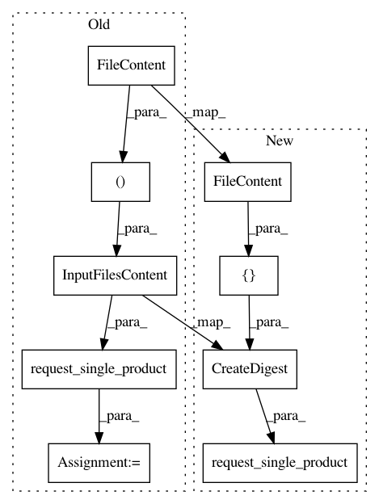

49d83b7227701485bcf1859e3884cc8058e7bd9d,src/python/pants/fs/fs_test.py,FileSystemTest,test_workspace_materialize_directories_result,#FileSystemTest#,75
Before Change
// TODO(/): at some point, this test should require that Workspace only be invoked from an @goal_rule
workspace = Workspace(self.scheduler)
input_files_content = InputFilesContent(
(
FileContent(path="a.txt", content=b"hello"),
FileContent(path="subdir/b.txt", content=b"goodbye"),
)
)
digest = self.request_single_product(Digest, input_files_content)
path1 = Path("a.txt")
path2 = Path("subdir/b.txt")
After Change
// TODO(/): at some point, this test should require that Workspace only be invoked from an @goal_rule
workspace = Workspace(self.scheduler)
digest = self.request_single_product(
Digest,
CreateDigest(
[
FileContent(path="a.txt", content=b"hello"),
FileContent(path="subdir/b.txt", content=b"goodbye"),
]
),
)
path1 = Path("a.txt")
path2 = Path("subdir/b.txt")
In pattern: SUPERPATTERN
Frequency: 4
Non-data size: 9
Instances
Project Name: pantsbuild/pants
Commit Name: 49d83b7227701485bcf1859e3884cc8058e7bd9d
Time: 2020-07-08
Author: 14852634+Eric-Arellano@users.noreply.github.com
File Name: src/python/pants/fs/fs_test.py
Class Name: FileSystemTest
Method Name: test_workspace_materialize_directories_result
Project Name: pantsbuild/pants
Commit Name: 49d83b7227701485bcf1859e3884cc8058e7bd9d
Time: 2020-07-08
Author: 14852634+Eric-Arellano@users.noreply.github.com
File Name: src/python/pants/fs/fs_test.py
Class Name: SingleFileExecutableTest
Method Name: test_raises_with_multiple_files
Project Name: pantsbuild/pants
Commit Name: 49d83b7227701485bcf1859e3884cc8058e7bd9d
Time: 2020-07-08
Author: 14852634+Eric-Arellano@users.noreply.github.com
File Name: src/python/pants/backend/python/rules/pex_test.py
Class Name: PexTest
Method Name: test_additional_inputs
Project Name: pantsbuild/pants
Commit Name: 49d83b7227701485bcf1859e3884cc8058e7bd9d
Time: 2020-07-08
Author: 14852634+Eric-Arellano@users.noreply.github.com
File Name: src/python/pants/fs/fs_test.py
Class Name: SingleFileExecutableTest
Method Name: test_accepts_single_file_snapshot